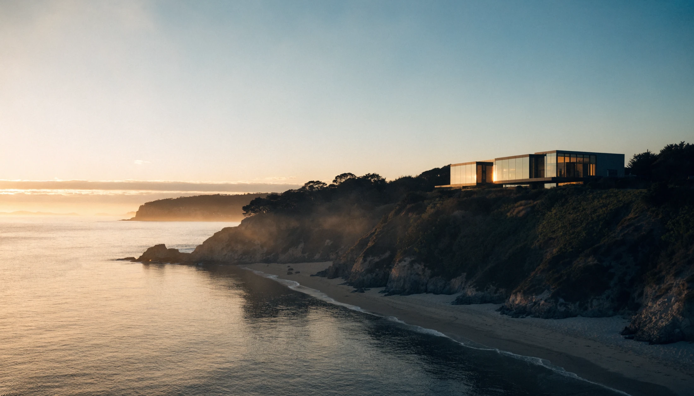

01 / 06 · The Glass Promontory
The Glass Promontory
Malibu · Carbon Beach
$24,500,000
For Sale · Private Walkthrough
Press play for the full cinematic walkthrough — or scroll on for the room-by-room tour. Sample listing · generated imagery pending final photography.

02 / 06 · The Great Room
Where the walls disappear.
Living on the edge of the Pacific
Retractable glass dissolves the seam between room and shoreline, so the ocean becomes the fourth wall.
- Glass WallsRetractable · 24 ft clear span
- Ceilings14 ft · rift white oak
- HearthBook-matched stone monolith

03 / 06 · The Kitchen
Built for the way you actually cook.
A chef's kitchen in honed stone
Two full islands, a separate scullery, and a professional suite kept quietly out of sight of the great room.
- IslandsDual · honed marble
- AppointmentsIntegrated pro suite
- ScullerySeparate chef's prep & pantry

04 / 06 · The View
The reason to be here.
One hundred and eighty degrees of Pacific
Primary-level living is lifted to the light, framing open water by day and the coast after dark.
- Outlook180° ocean & coastline
- ExposureSouthwest · all-day sun
- LivingElevated primary level

05 / 06 · Pool & Ocean Terrace
Where the property meets the sand.
An infinity edge over Carbon Beach
The terrace steps down to a sixty-foot infinity pool that reads straight into the tideline, with private beach frontage below.
- Pool60 ft · infinity edge
- TerraceIpe & travertine deck
- FrontageDirect Carbon Beach access

06 / 06 · The Setting
Few addresses close like this one.
Arrange a private showing
The Glass Promontory is shown by appointment only. Reach The Hale Group to walk it in person, or request the full package.
$24,500,000 · 5 bd · 7 ba · 8,200 sq ft · Malibu, Carbon Beach — sample listing, figures illustrative